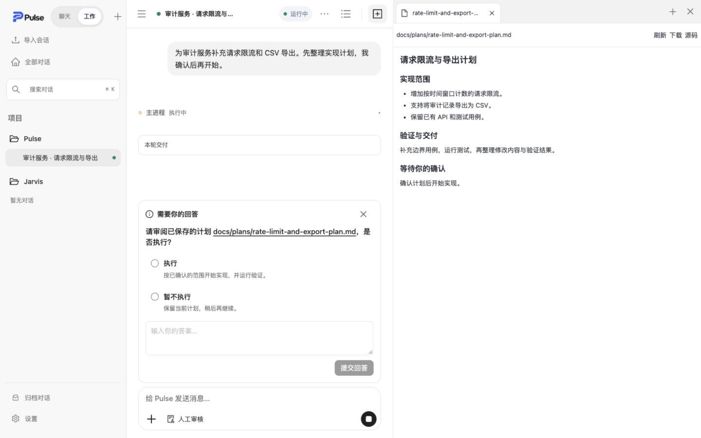

在项目里，认真做事
围绕项目组织会话，阅读文件、修改代码、运行检查。多步骤任务有计划、有进展，也有交付。
PROJECTS & TASKSYOUR DESKTOP AI WORKSPACE
把任务交给 Pulse。连接你自己的模型，
在熟悉的项目里工作，让每一步进展都看得见。
macOS · Windows · Linux ｜ 使用你自己的模型配置
A PLACE TO GET THINGS DONE
在同一个窗口里查看任务进展、审阅计划与预览文件。
需要介入时，随时补充要求或接管操作。

LESS SWITCHING. MORE DOING.
聊天、项目工作、文件与工具，
在一个有连续性的工作空间里连接起来。
围绕项目组织会话，阅读文件、修改代码、运行检查。多步骤任务有计划、有进展，也有交付。
PROJECTS & TASKS查看执行活动与工具调用。补充要求、排队发送消息，或停止当前任务，让合作保持在你的节奏里。
VISIBLE PROGRESS用标签页预览文档、图片和代码差异。桌面内置浏览器支持页面操作与人工接管，减少来回切换。
TABS & BROWSER配置自己的模型供应商与默认模型。模型可以替换，项目会话和执行记录保持连续。
BRING YOUR MODELYOUR IDEAS. YOUR CONTROL.
一个值得持续合作的工作伙伴，
需要清晰的过程，也需要明确的边界。
选择项目，描述目标。添加文件、引用或技能，补充必要的上下文。
复杂任务先审阅计划，回答关键问题。只有明确同意，才授予需要确认的执行权限。
查看活动、文件与验证结果。任务可以中断和继续，具体恢复条件会在界面中说明。
MAKE ROOM FOR YOUR NEXT IDEA
选择你的桌面系统，开始搭建自己的 AI 工作空间。
正在读取客户端发布信息…
为 Apple Silicon 和 Intel Mac 提供独立安装包。
查看发布进度 Apple SiliconIntel Mac · 查看发布进度安装向导支持选择安装位置，卸载保留用户数据。
查看发布进度 x64使用 AppImage，或选择适合 Debian / Ubuntu 的 DEB 包。
查看发布进度 AppImage · x64DEB · 查看发布进度下载与你的系统和架构匹配的客户端，按安装说明完成设置。
在设置中填写模型供应商信息。模型服务可能单独收费。
添加现有项目文件夹，或者先聊一聊要解决的问题。
A FEW THINGS TO KNOW
需要。Pulse 是工作客户端与运行时，请在设置中连接支持的模型供应商。模型的可用性、能力和费用由相应服务提供方决定。
项目、会话和运行状态保存在本机。连接云端模型或使用联网工具时，相关内容仍会按照你的配置发送给对应服务；本地存储不等于完全离线。
源码和发布包采用 PolyForm Noncommercial 1.0.0，允许符合条款的非商业使用、修改与分发。商业用途需要另行许可，具体以仓库 LICENSE 为准。
可以在 GitHub 提交 Issue。仓库文档介绍了桌面客户端、工作会话、浏览器与可恢复运行时的工作方式。